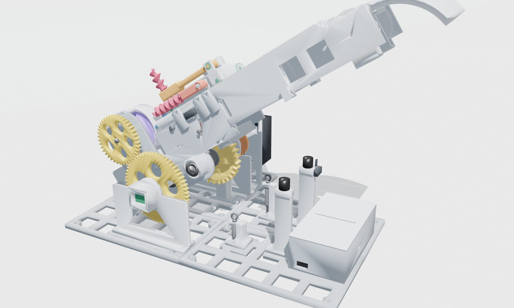
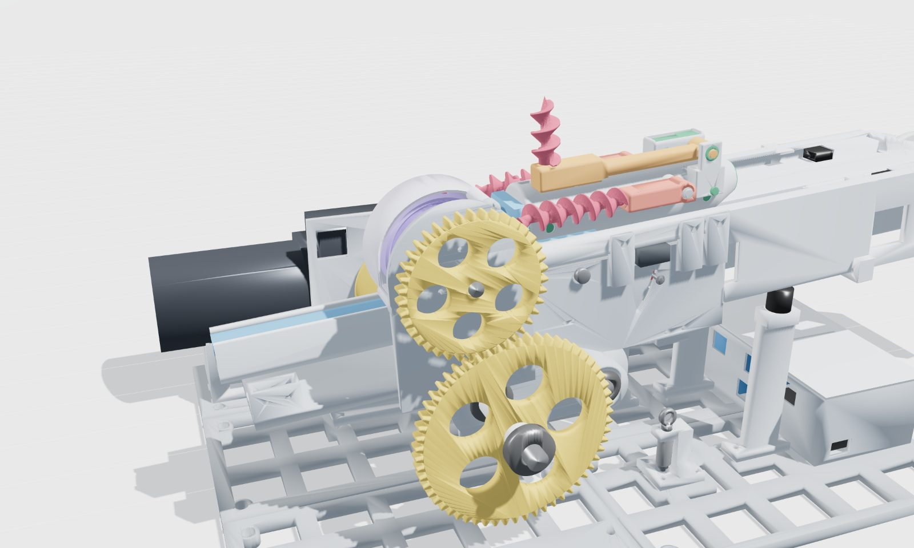
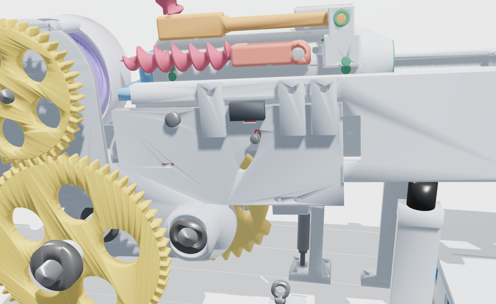
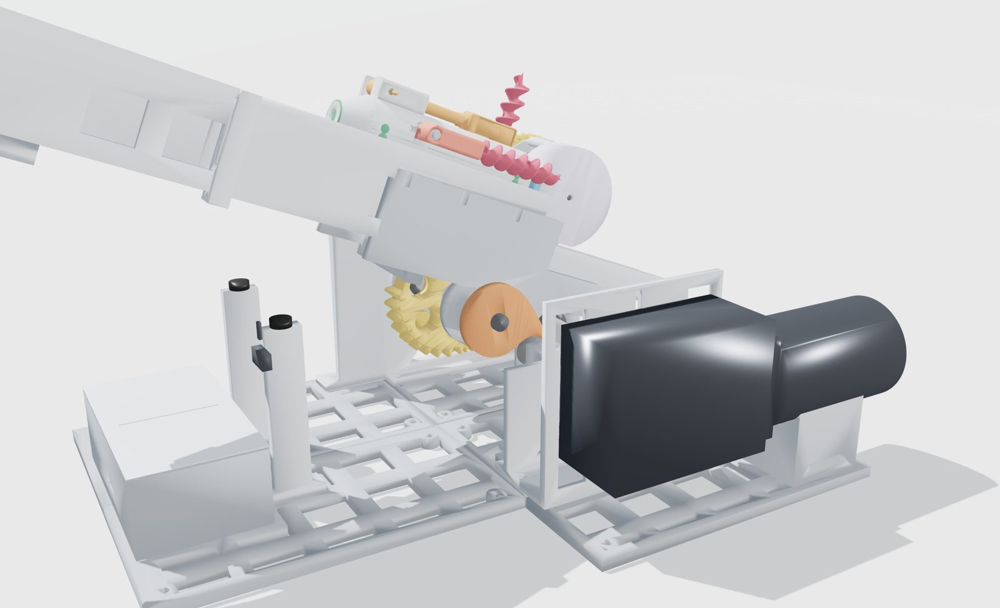
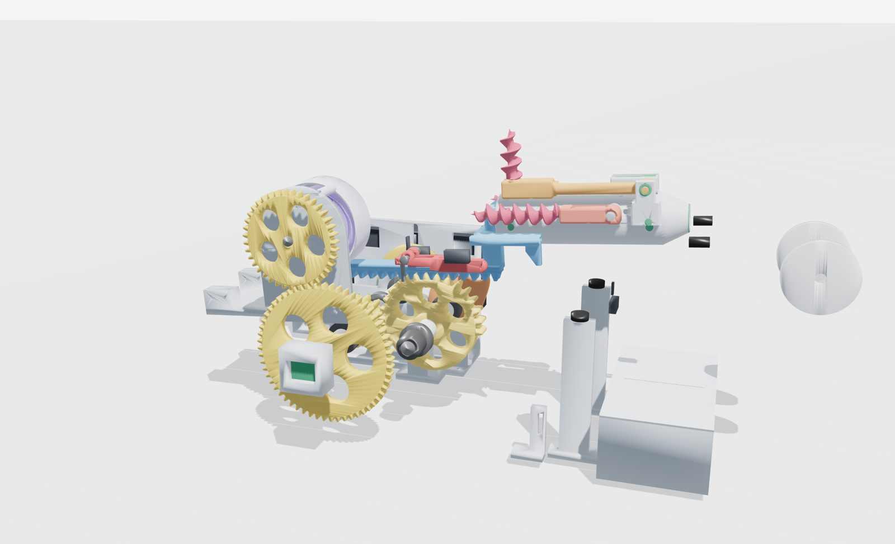
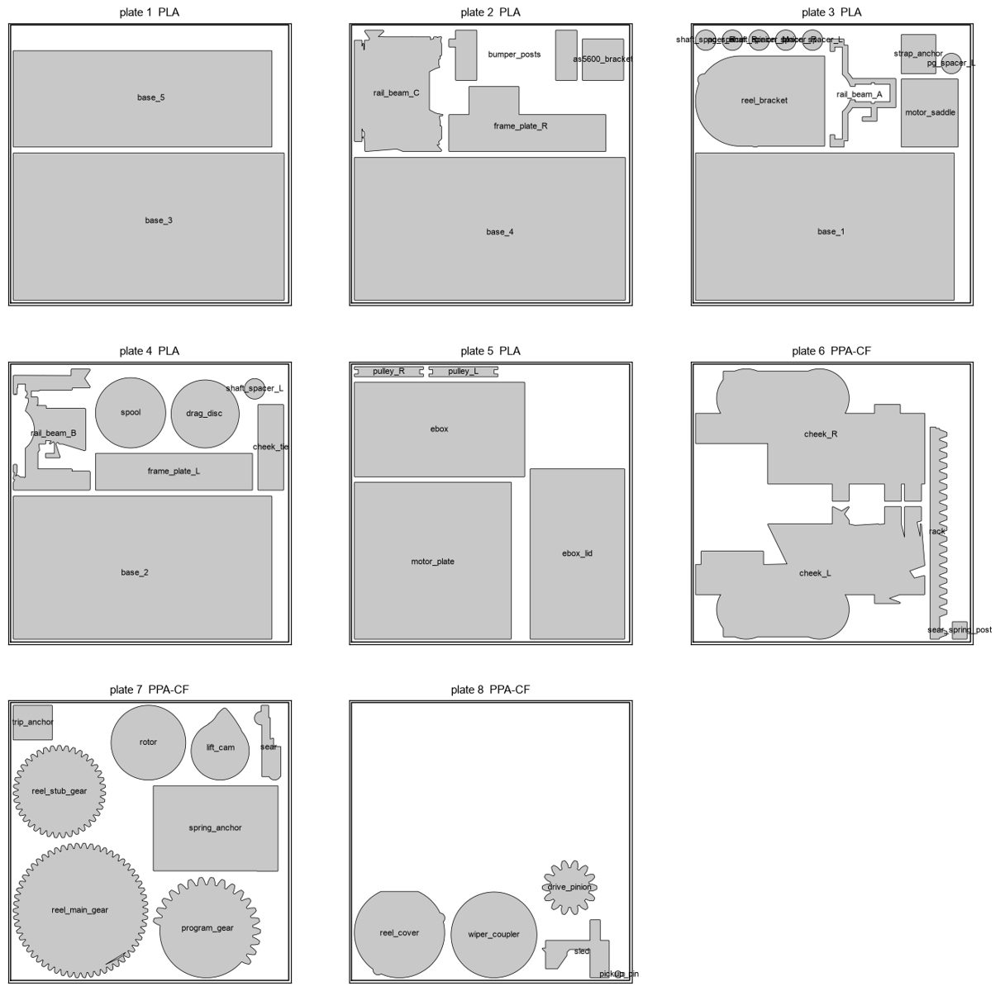
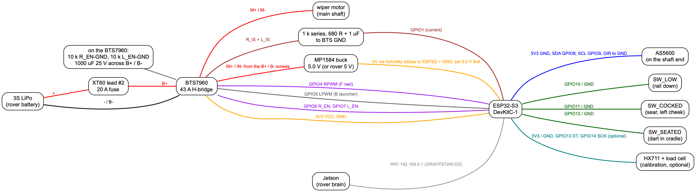
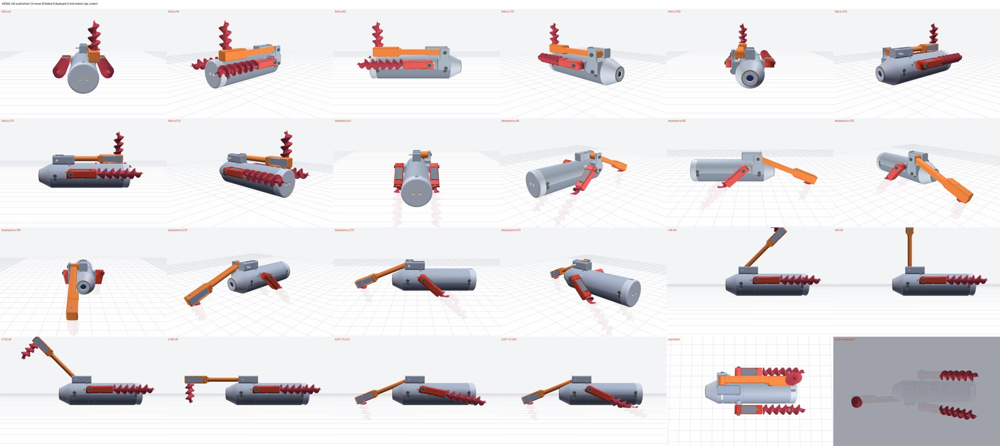

One wiper motor fires the dart, reels it in and tows the rover.
Ground station (launcher + reel) designed around the KEDGE v30 dart and the parts in hand. Every part is modelled, every motion is computed from the geometry and physics, and the whole cycle runs without a hand on it.
Fire, flight, landing, the dart anchoring itself, the tow, release, re-cocking and the retrieve back onto the cradle, played on the real meshes. The launch is shown in slow motion; long phases are sped up and labelled.
The reel rotor is geared straight to the main shaft. One-way bearing A lets the launcher pinion freewheel and backstop C holds the launcher still. The rotor's drag disc pushes the pickup pin out and every rotor turn lays one turn of line on the still spool.
Backward · launcher
Bearing A locks and the program gear turns. One program turn is one shot: teeth draw the carriage back, the spring-loaded sear snaps in front of the carriage, the cam lifts the rail toward 35°, a cord tied to the base goes taut and pulls the sear down, the rail drops back. The reel rotor runs backward too, which pulls the pin in and frees the line.
Stopped · hold
The wiper's worm is self locking, so a cocked carriage, a raised rail and a loaded tow line all hold with the power off.
program gear
what happens
rail
340°
first tooth meets the rack
4°
340° → 246.5°
carriage drawn back 208 mm, keel rides over the sear hook
4°
246.5° → 252.5°
last tooth lets go, carriage runs about 1.4 mm onto the sear hook (a gentle catch); the controller stops at 249.5° (cocked)
4°
252.5° → 302.5°
lift cam raises the rail on the frame roller, slowly (the rail carries the program gear round the pinion)
4° → 35°
284.5° → 294.5°
trip cord goes taut and pulls the sear down: the shot
25.3° → 33°
304.5° → 332.5°
rail drops back onto rubber feet; the fire run stops at 338°
35° → 4°
Mission cycle
Ready: cocked, dart seated against the pusher, rail down.
Fire: motor backward. Line pays out by end pull: the spool never turns, about 0.8 N over rounded edges and a ceramic eye, no overrun.
The dart lands and anchors itself: kick leg over the nose, foot screwed in, pods down, augers in.
Tow: motor forward, tension held at the limit (20 N default, set from the Jetson).
Release: the dart unscrews and folds.
Cock: motor backward from 338° to 249.5°.
Retrieve: motor forward until the dart is back on the cradle and presses the seated switch.
Parts

Firing pose: the cam has lifted the rail to 35°.

Left side: reel drive (58:39), spincast reel on the dart axis, sear and trip tower.

Clevis sear in double shear: the arc catch face keeps the hook locked until the trip cord pulls it down. The switch reads the arm.

Right side: lift cam (envelope of the roller) and the wiper coupler.

Rail and left plate hidden mid cock: program gear, rack, keel, sear.

Eight plates for the Bambu (gears, sear, carriage, cheeks and posts in PPA-CF).
Wiring
Pull the XT60 every time a wire moves; battery in last. The ESP32 takes 5 V from a buck set to 5.0 V (or the rover's 5 V rail).

Download everything
Each button offers the file to save. The same files are on the Mac in ~/Downloads/kedge.
13 printed parts + fit coupon, Ø17 x 72 augers, opposite hands · 3.9 MB
KEDGE v30 run sheet
build day, step by step for the dart · PDF
KEDGE v30 engineering report
holding, flight, loads, battery · PDF
KEDGE v30 dart

24 view audit sheet: folded, deployed and mid motion.
v30 takes the best variant from the v29 study: Ø17 x 72 augers with the pods at y 31, about 8% more holding than v29. Kick and drill sweeps are clean at 1° steps, every STEP reimports valid.
drill depth
44.8 mm
foot depth
35.5 mm
holding, moist loam
48.5 N
holding, firm clay
124 N
folded length
168.7 mm
mass with ballast
≈ 280 g
Interactive dart viewer (shows v29; v30 changes only the augers, Ø16 x 70 to Ø17 x 72, and the pod spacing, y 30.5 to 31).
Independent review, fixed
A separate review attacked the design for anything that would bind, break or fire at the wrong time. What changed because of it:
Sear rebuilt as a clevis on a pin in double shear (now a 5 x 25 shoulder screw), lifted by a small spring, with a sloped lead-in and overtravel so it always catches (now a 1.4 mm run). The cocked switch now reads the sear itself.
Springs re-specified (1.6 mm wire, 134 coils): the first spec would have been overstressed.
One-way clutches doubled and pressed into steel sleeves; peak program gear torque 11.6 N·m including the trip.
Carriage in PPA-CF with a 12 x 16 stem, urethane end stops (later 40 mm 90A pads, round 8), cords knotted through the shoes.
Reel bracket bolted to a cheek pad, cheeks extended and bolted to the rail, every shaft stack clamped end to end, cam roller on a pin supported both sides (now a 608 bearing on an 8 mm pin).
Seated switch moved next to the pusher; firmware refuses the risky jogs and slows the last part of cocking.
A second review then found that the first trip design could never fire (the finger missed the pin) and that the audit had been allowed to ignore the sear. So:
The trip is now a cord from the sear arm to an eye bolt on a short post: slack until the rail passes about 25°, it pulls the hook clear at 33°. The height nut on the eye bolt sets it (later rounds moved the cord outside the cheek).
The sear angle is now solved from contact between the real meshes (hook against keel, cord length), and the collision check no longer exempts the sear. The arc-shaped catch face slides on itself, so the hook catches reliably.
The cocked switch moved outside the cheek where the arm only lifts off it, D-shaped bores carry the gear torque, the cheeks bolt to the rail through tabs into inserts, and the spring anchor is a thick bar with steel hook pins.
A third pass on the firmware fixed 18 bugs, including one where a held jog key could fire the launcher. 105 automatic checks now pass.
Rounds 3 to 13. Round 3 had two reviewers, one on the trip and catch, one on printing and assembly order. Fixed:
The last gear tooth lets the carriage go all at once, and the old 5 mm run onto the hook would have broken the keel on the first cock. Now: about 1.4 mm run, keel 18 mm long with root fillets, and the carriage prints on its side so the keel bends along its layers.
The trip cord ran through the cheek and the trip post. It now ties to a grooved steel pin (e-clip) that sticks out through an arc slot, so the whole cord runs in one plane outside the cheek. The generator checks that line against every part at each rail angle.
Trip post rebuilt: the eye bolt drops through a shelf. A nut sets the height (a threaded adjustment that cannot creep) and a preloaded spring underneath gives if the cord is ever overdriven. The sear has a hard down-stop.
5 x 25 M4 shoulder screw into a captive nut, stronger sear spring, and the shot timing taken from the real cam: phi 294.5, rail 33°.
Assembly fixes: the sear bolt and pulley axles were blind and could not be fitted. Every frame part now has holes into heat-set inserts in the tiles. The spring anchor nut traps are open, D flats only at shaft ends (round bores and spot flats mid shaft), the cheeks split so each prints flat, and the build order is rewritten so every part can actually go in.
Round 4 caught and fixed: the sear spring pins ran through solid plastic (slots cut for the hook loops), a urethane pad on the catch would have been cut up (removed), the shoulder screw nut hit a gusset (captive nut in a thicker lug), the eye bolt hit the post base (M4 x 35), deck screws hidden under frame feet (moved, counterbored, tiles go down first), and two impossible assembly steps (sear now goes in before the rail, rail C after the carriage).
Round 5 (reel, line, retrieve): the seated switch could never close (lever raised so the dart presses it about 2 mm), the drag disc O-ring had no squeeze (0.4 mm now, plus a shoulder and steel peg), square edges and a carbon-fibre eye in the line path (rounded rotor edges, ceramic eye ring, chamfered pusher hole). With honest wrap friction the range drops to about 8.4 m and the tension estimate is corrected. Tow now stops if the rail lifts. The muzzle zone is opened up so a rolled dart can come back in, and a swivel stops line twist rolling it.
Round 6 (drive train): the rail is a planet carrier, since the program gear rides on it round the drive pinion, so a steep lift multiplied the motor torque up to 4 times. The lift is now slow and even (50° of the program gear, lift to 35°, shot at 33°, same range), and the physics, the mission sim and the firmware's angle tracking all carry that term. The program gear and cam now hang on steel flange hubs instead of grub screws in plastic, the cam roller is a 608 bearing, and the clutches sit in machined 3 mm sleeves. The firmware scales the BTS7960 current sense by the duty and caps the tow at 50 N. The wiper must be measured before it is connected.
Round 8 (launch): the carriage end stop was about 10 times too small (now 40 mm 90A pads sunk in solid blocks), the dart's exit kicks the rail muzzle-up every shot (a check strap to a second sprung post now takes that (set at 37.5° in round 9), so the trip cord does not), and the springs surge at about 35 Hz (screw-in ends, foam dampers inside, flanged and grooved pulleys so slack cord cannot jump off). The pusher hole is 14 mm so the bridle knot sits inside the tail cap.
Round 9 (the newest parts): the keel and stem slots now run 16 mm past rest so the end-stop pads can actually compress; the check strap gets a long die spring (about 1.5 J) and is set at 37.5°; the drop is really a free fall, so bigger bumpers take it and the firmware re-zeroes phi as the rail lands (bearing A is a roller clutch and relocks at once); a power cut mid-run can no longer restore a stale "cocked"; fire eases off over the top of the lift; the flange hubs are now a standard 12 mm coupling size; a floating switch bracket was joined to the rail.
Round 10 (final check): two firmware paths could drive the program gear past the first rack tooth ("finish" started with the rail already up, and a stuck rail-down switch). Both now stop safely, a b jog also marks phi unknown in flash, and the drop edge only counts near the top of the lift. The bumper posts got M6 inserts and wider tops, and the eye bolts are specified fully threaded.
Round 11 (firmware with a real 0.2 s free fall modelled): the "switch never closed" check now runs on a timer, not the shaft count, the motor slows after the top so the fall has margin before the rack, phi is re-zeroed at the debounced edge, a rail that lands after a stop is caught, and a finish after the trip window no longer faults a healthy machine. Measure the real drop time on the bench and set dropMaxMs.
Round 12 and 13: the build guide got a safety block, a glossary and the missing steps (rack to carriage, inserts, springs hooked only after first power-up); the electrics got defined cable routes (never at the pivot, one loop from the cheek tie), the buck fed from the BTS7960 terminals so motor current cannot run through the ESP32 ground, a measured IS calibration formula, and a re-laid electronics box (motor leads by their own window, USB slot, sensor window).
Not proven yet
Spring rate and the wiper's real speed and torque are catalogue values. Measure both and rerun the physics.
Retrieve onto the cradle is the weakest link. The horn curls 115° so a hanging dart meets a curve, the muzzle is opened up, and a stepped funnel (the folded dart's envelope rolled ±47° narrowing to ±8°) turns a rolled dart upright. It is geometry, not contact physics, and the horn end is still about 300 mm above the ground. Fallback: if the motor stops on current before the seated switch, seat the dart by hand.
The spool has no level wind. Turns pile at the front and slide back under tension. Wind slowly the first time.
The M5 set screws in the two steel flange hubs carry up to 11.6 N·m. Check them after the first 20 shots.
The catch is still a short impact (1.4 mm run, no pad). Check the keel and hook after 50 shots.
Rebuild it
cd ~/Downloads/kedge/gs
./run_gs.sh out # geometry, tables, physics, timeline, audit, print pack, sim (about 45 s)
cd ../fw/test && g++ -std=c++17 -O1 -I../gs/grappstar_gs -o test_gs test_gs.cpp && ./test_gs